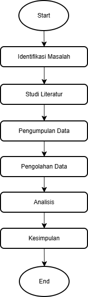

Publikasi Ilmiah Dosen
| No. | Nama Dosen | Informasi Publikasi | Bidang Penelitian | ||
|---|---|---|---|---|---|
| Judul Publikasi | Tahun | Jenis Publikasi | |||
| 1 | Dr. Andi Ahmad, S.T., M.T. | Implementasi Machine Learning untuk Prediksi Data | 2025 | Jurnal Internasional | Artificial Intelligence |
| Analisis Deep Learning pada Data Citra Digital | 2026 | Prosiding Internasional | |||
| 2 | Dr. Nurul Rahma, S.Kom., M.Kom. | Analisis Keamanan pada Aplikasi Berbasis Web | 2024 | Jurnal Nasional | Cyber Security |
| Sistem Deteksi Serangan Jaringan Menggunakan AI | 2025 | Prosiding Nasional | |||
| 3 | Dr. Muhammad Arif, S.T., M.T. | Penerapan Internet of Things pada Smart Campus | 2026 | Jurnal Internasional | Internet of Things |
| Total publikasi yang ditampilkan: 5 publikasi | |||||
Bidang Keahlian
-
Artificial Intelligence
- Machine Learning
- Deep Learning
- Natural Language Processing
- Computer Vision
-
Cyber Security
- Network Security
- Cryptography
- Digital Forensics
- Web Security
-
Internet of Things
- Smart Campus
- Sensor Networks
- Embedded Systems
- Smart Environment
Metodologi Penelitian
